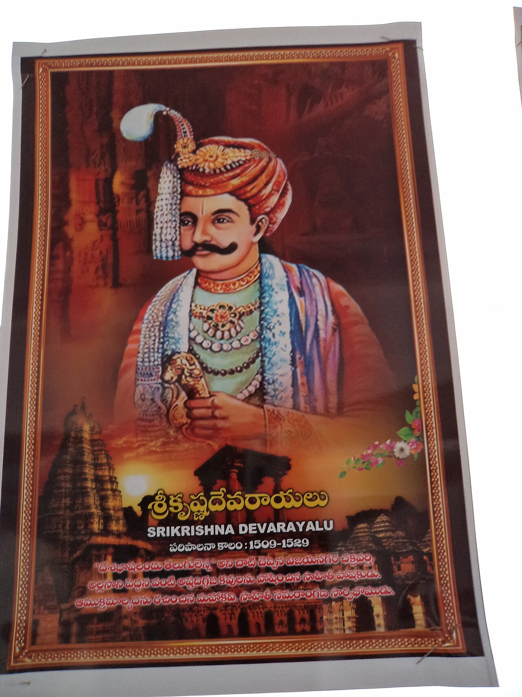
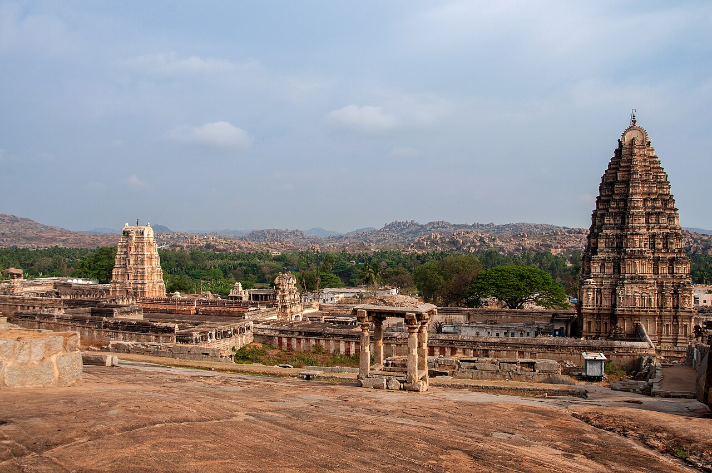
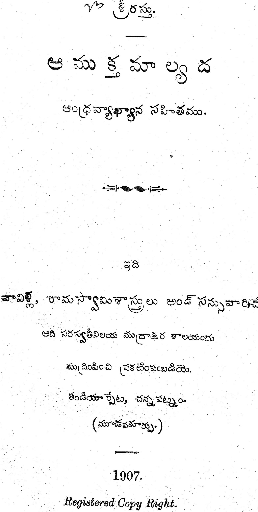
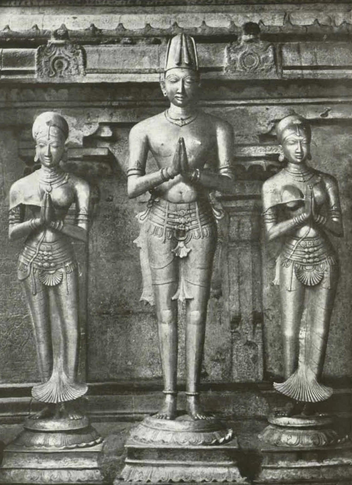

Accession
Krishnadevaraya ascended the Vijayanagara throne in 1509.

THE GOLDEN AGE OF VIJAYANAGARA
1509 — 1529
A ruler remembered in South Indian history for his reign over the Vijayanagara Empire and his association with literature, architecture, and culture.
EXPLORE HIS LEGACY →THE RULER
Sri Krishnadevaraya was a prominent ruler of the Vijayanagara Empire. He became king in 1509 and ruled during a period remembered for political activity, military campaigns, and cultural development.
During his reign, the Vijayanagara Empire maintained a powerful position in southern India. His period of rule is associated with campaigns that expanded or consolidated the empire's influence across important regions.
Krishnadevaraya is also remembered for his patronage of literature and the arts. Telugu and Sanskrit literary traditions received attention at the royal court, contributing to the cultural reputation of the Vijayanagara period.
The surviving monuments of Hampi provide a lasting connection to the Vijayanagara world. Temples, sculptures, inscriptions, and other architectural remains continue to reflect the artistic and cultural achievements of the period.

A LIFE IN DATES
Krishnadevaraya ascended the Vijayanagara throne in 1509.
His reign included important military campaigns and the expansion and consolidation of Vijayanagara power.
Literature, architecture, and the arts continued to receive royal patronage during this period.
Krishnadevaraya's reign came to an end in 1529.
CULTURE & LITERATURE

01
Krishnadevaraya is closely associated with Telugu literary history. His work Amuktamalyada is an important work traditionally associated with the emperor and Telugu literary heritage.
Sanskrit literary and scholarly traditions also formed part of the intellectual culture of the Vijayanagara court.
Vijayanagara architecture is known for monumental temples, detailed stonework, sculptures, and distinctive structures.
Literature, music, religious traditions, and other artistic practices formed an important part of the cultural environment.
Desabhāṣalandu Telugu lessa.
— Traditionally attributed to Sri Krishnadevaraya
HIS LEGACY

Remembered as one of the significant rulers of the Vijayanagara Empire.
His association with Telugu literature remains an important part of his historical and cultural legacy.
The monuments and cultural remains of Vijayanagara continue to preserve the memory of the period.